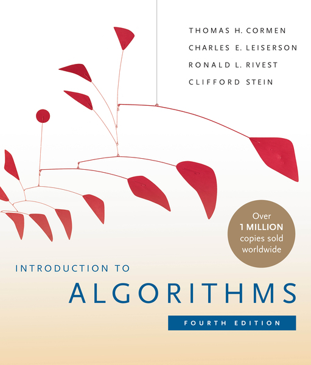
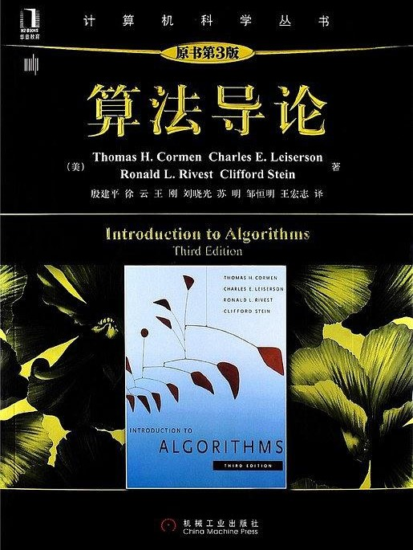
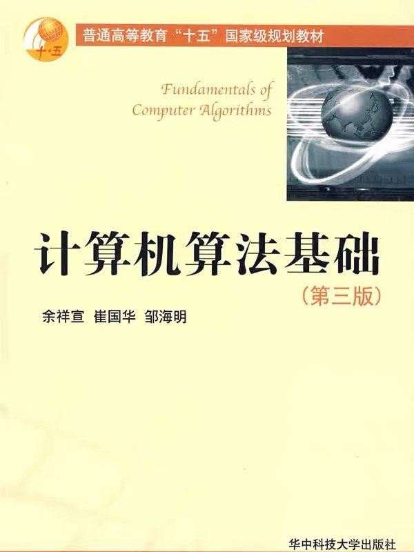
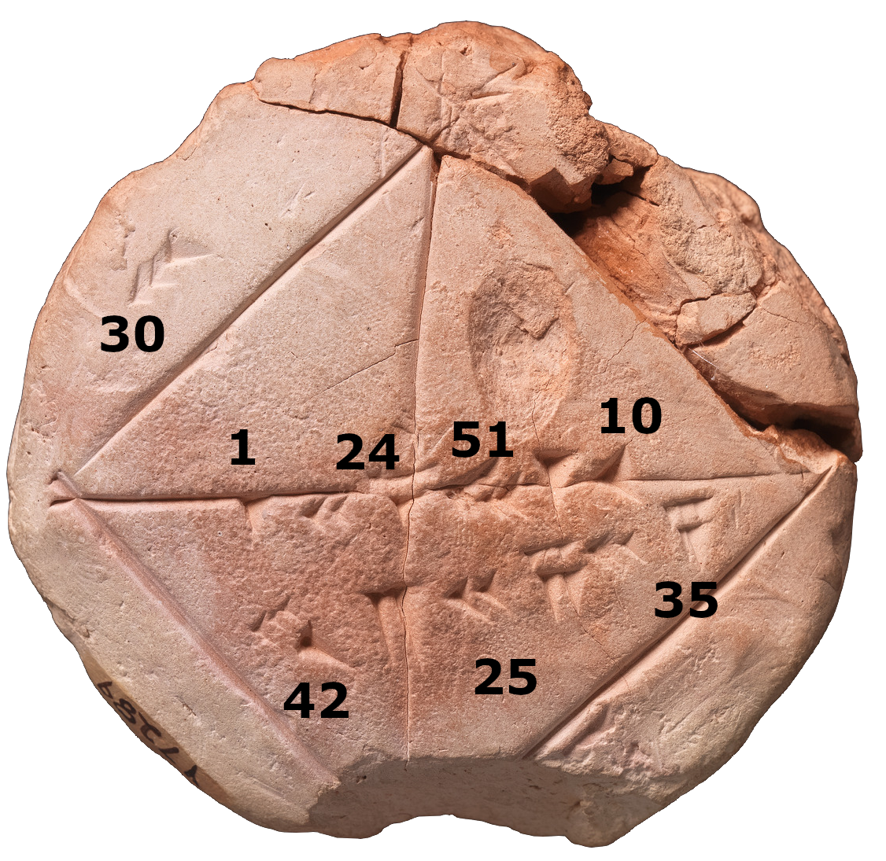

授课：张腾 tengzhang@hust.edu.cn
时间：第 9 ~ 16 周，周一 3 ~ 4 节课、周三 3 ~ 4 节课，共 32 学时
地点：西十二楼 S401
主页：https://avanti1980.github.io/course-alg/
考核：闭卷考试 (70%)、作业 + 考勤 (30%)



回答三个问题
是什么 what
为什么 why
怎么样 how
两河流域 古巴比伦 汉谟拉比王朝 (公元前1800年 ~ 公元前1600年)
泥板上的楔形文字，记录了解决一个实际问题的完整步骤
一个蓄水池
深度为 3.33，挖出土的体积为 27.78
长度比宽度多 0.83
应当取深度 3.33 的倒数，得 0.3
乘以体积 27.78，得 8.33
取 0.83 的一半，再取平方，得 0.17
加 8.33，得 8.51
取平方根得 2.92
将这个数字复制得到两个，其中一个加上 0.42，另一个减去 0.42
可以算出 3.33 是长度，2.5 是宽度
算法不是计算机才能做的事，计算机出现前，算法就已经存在很久了
算法的朴素本质：完成任务所需的明确步骤序列
大象装冰箱算法
上课算法
YBC 7289 号泥板：$1 + \frac{24}{60} + \frac{51}{60^2} + \frac{10}{60^3} = 1.41421296 \ldots$
对 2 的平方根的计算精确到了小数点后 5 位
对 2 的平方根提出一个猜测数
按如下方式重复生成新的猜测数：
用 2 除以当前猜测数
所得数字加上猜测数
除以 2 得到一个新的猜测数
当最新的两个猜测数几乎相等时，停止重复
该算法中已经出现了选择和循环

算法是我们设计的一组明确的步骤序列
程序设计是用计算机能理解的编程语言实现这些步骤的活动
计算机算法：运行在计算机上，把输入转换成输出的一组计算步骤
已全面接管生活
“算法之父” — 阿尔·花拉子米 (约 780 ~ 850 年)
9 世纪波斯数学家、天文学家、地理学家
花拉子米早年游学印度，约于公元 825 年写成两部划时代著作
1. The Compendious Book on Calculation by Completion and Balancing
花拉子米早年游学印度，约于公元 825 年写成两部划时代著作
2. On the Calculation with Hindu Numerals
词汇演化
花拉子米：来自花拉子模的人
1219 年，蒙古西征灭了花拉子模，但花拉子米的学术遗产已超越时空
丘处机：城中常十余万户，国破以来，存者四之一
耶律楚材：寂莫河中府，声名昔日闻，城隍连畎亩，市井半邱坟
《射雕英雄传》第三十七回 从天而降
原来蒙古大军分路进军，节节获胜，再西进数百里，即是花拉子模的名城撒麻尔罕。成吉思汗哨探获悉，此城是花拉子模的新都，结集重兵十余万守御，城精粮足……
成吉思汗自进军花拉子模以来，从无如此大败，当晚在帐中悲痛爱孙之亡，怒如雷霆。郭靖回帐翻阅《武穆遗书》，要想学一个攻城之法，但那撒麻尔罕的城防与中国大异，遗书所载的战法均无用处……
郭靖正欲说出辞婚之事，忽听得远处传来……，只道城中投降了的花拉子模军民突然起事，……。成吉思汗笑道：“没事，没事。这狗城不服天威，累得我损兵折将，又害死了我爱孙，须得大大洗屠一番。大家都去瞧瞧。”
回答三个问题
是什么 what
为什么 why
怎么样 how
两个无刻度水桶，总容量分别为 9 升和 6 升，如何量出 3 升的水？
两个无刻度水桶，总容量分别为 9 升和 6 升，如何量出 3 升的水？
算法：
将 9 升的桶装满水
向 6 升的桶倒水，直到满
9 升桶中剩下的即为 3 升
如果总容量分别为 7 升和 5 升，如何量出 1 升的水？
两个无刻度水桶，总容量分别为 7 升和 5 升，如何量出 1 升的水？
算法：
将 5 升的桶装满水，5/5、0/7
将 5 升的桶中的 5 升水全部倒入7升的桶中，0/5、5/7
将 5 升的桶装满水，5/5、5/7
向 7 升的桶倒水，直到满，此时 5 升的桶中还剩 3 升水，3/5、7/7
将 7 升的桶中的水倒掉，3/5、0/7
将 5 升的桶中的 3 升水倒入 7 升的桶中，0/5、3/7
将 5 升的桶装满水，5/5、3/7
向 7 升的桶倒水，直到满，此时 5 升的桶中还剩 1 升水，1/5、7/7
两个无刻度水桶，总容量分别为$a$升和$b$升
思路：装满对应$+a$或$+b$，倒掉对应$-a$或$-b$
能否通过若干次$\pm a$、$\pm b$得到$t$？即存在整数$x$、$y$使得$ax + by = t$？
前面的例子：$5 \cdot 3 - 7 \cdot 2 = 1$
由裴蜀定理，$t$必须是$a$、$b$最大公约数的倍数，若$t=1$，则$a$、$b$互素
原问题：是否存在整数$x$、$y$使得$ax + by = t$？
问题 1：求最大公约数 (greatest common divisor)
输入正整数$a$、$b$，输出$d = \gcd(a,b)$
令$a \gets a / d$、$b \gets b/ d$、$t \gets t / d$，此时问题不变但$\gcd(a,b) = 1$
问题 2：求整数$x$、$y$
输入互素的正整数$a$、$b$，输出整数$x$、$y$使得$ax+by=1$
$x \cdot t$、$y \cdot t$就是原问题的解
问题 1：输入正整数$a$、$b$，输出$d = \gcd(a,b)$
$1$必然是公约数
从$2$遍历到$\min(a,b)$，最大能同时整除$a$、$b$的数就是最大公约数
def gcd(a: int, b: int) -> int: d = 1 for i in range(2, min(a, b) + 1): # 最大公约数不会大于两者中的较小者 if a % i == 0 and b % i == 0: # 同时整除即为公约数 d = i return d
问题 2：输入互素的正整数$a$、$b$，输出整数$x$、$y$使得$ax+by=1$
定理：$\{ 0, a, \ldots, (b-1) a \}$中的$b$个数除以$b$的余数恰为$0, 1, \ldots, b-1$
证明：设$i \ne j$且$ia \equiv ja \bmod b$，则$b \mid (i - j) a$，又$a$、$b$互素，故$b \mid (i - j)$，注意$i, j \in \{ 0, 1, \ldots, b-1 \}$，即$|i - j| < b$，只能是$i = j$，矛盾
若$ax+by=1$，则$ax \bmod b = 1$，恰为剩余系中除$0$外的某个数
def coef(a: int, b: int, t: int, d: int) -> tuple[int, int]: if t % d != 0: raise ValueError("t必须是最大公约数d的倍数") a, b, t = a // d, b // d, t // d # 此时 a b 互素 for x in range(b): # 0 a 2a ... (b-1)a 构成一个模 b 的剩余系 if (a * x) % b == 1: y = (1 - a * x) // b return t * x, t * y
用数论领域的术语，集合$\{ 0, a, \ldots, (b-1) a \}$构成模$b$的完全剩余系
欧几里得《几何原本》第七卷 约公元前 300 年
记$a = b \cdot q + r$且$r < b$，故$\gcd(a,b) \mid a - b \cdot q = r$
于是$\gcd(a,b) \mid \gcd(b,r)$，同理可证$\gcd(b,r) \mid \gcd(a,b)$，故两者相等
不断令$(a,b) \gets (b,r)$直到$b = 0$停止循环，此时$a$就是最大公约数
def Euclidean(a: int, b: int) -> int: # 辗转相除 while b: a, b = b, a % b return a
拉梅定理证明了辗转相除的最坏情况出现在$a$、$b$为相邻斐波那契数时
$a = b \cdot q + r$，不断令$(a,b) \gets (b,r)$，用递归替代循环可得到系数
def Euclidean_extended(a: int, b: int) -> tuple[int, int, int]: # 返回 (d, x, y) 使得 ax + by = d = gcd(a, b) if b == 0: return a, 1, 0 else: d, x, y = Euclidean_extended(b, a % b) return d, y, x - (a // b) * y def Euclidean_coef(a: int, b: int, t: int) -> tuple[int, int]: d, x, y = Euclidean_extended(a, b) if t % d != 0: raise ValueError("t必须是最大公约数d的倍数") t = t // d return t * x, t * y
《九章算术》第一卷“方田”章的“约分术”，约公元前 100 年
原文：可半者半之，不可半者，副置分母、子之数，以少减多，更相减损，求其等也。以等数约之。
现代白话文：如果分子和分母都是偶数，就先同除以 2 (将它们减半)；如果不能同除以 2，就把分母和分子并列放置，用大数减去小数，反复减来减去，直到减得两数相等 (这个“等数”，即最大公约数)。最后用这个“等数”去约简 (除以) 分子和分母。
$\gcd(a,b) = \gcd(a-b,b)$，不断令$(a,b) \gets (a-b,b)$直到$a=b$
def alternative_subtraction(a: int, b: int) -> int: # 更相减损 shift = 0 # 最大公约数的质因子分解中 2 的幂次 while not (a & 1) and not (b & 1): # a、b 均为偶 2是公因子 a >>= 1 # a <- a / 2 b >>= 1 # b <- b / 2 shift += 1 while True: if a > b: a = a - b elif a < b: b = b - a else: return b << shift
更相减损没有将“可半者半之”应用到极致
def gcd_opt(a: int, b: int) -> int: # 改进的更相减损 shift = 0 # 最大公约数的质因子分解中 2 的幂次 while not (a & 1) and not (b & 1): # 均为偶 2是公因子 a >>= 1 # a <- a / 2 b >>= 1 # b <- b / 2 shift += 1 # 此时 2 已不再是公因子 while not (a & 1): # a 不断除以 2 变成奇数 a >>= 1 while b: while not (b & 1): # b 不断除以 2 变成奇数 b >>= 1 if a < b: a, b = b, a # 确保 a 大 b 小 a -= b # 更相减损 新的 a 必为偶 return a << shift
循环轮数约为$\log(\max(a, b))$，同辗转相除，但避免了取模运算
四种方法
| 方法 | 循环轮数 | 每轮操作 |
|---|---|---|
| 暴力穷举法 | $\min(a, b)$ | $2$次取模运算 |
| 辗转相除法 | 约$\log(\max(a,b))$ | $1$次取模运算 |
| 更相减损术 | 最坏$\max(a, b)$ | 无取模运算 |
| 改进的更相减损术 | 约$\log(\max(a,b))$ | 无取模运算 |
输入：数组$a = \langle a_1, a_2, \ldots, a_n \rangle$
输出：$a$的元素的重排列$\langle a'_1, a'_2, \ldots, a'_n \rangle$且$a'_1 \le a'_2 \le \cdots \le a'_n$
借助排序这个最经典的问题，完整走一遍算法研究的两个核心环节：
五种基于比较的排序算法：冒泡、选择、插入、归并、快速排序
相邻元素不断比较和交换，让较小的元素逐步“冒泡”到数组前端
def bubble_sort(a: list[int]) -> None: n = len(a) for i in range(n-1): for j in range(n-1, i, -1): # 从后往前遍历，将较小的元素像气泡一样浮到前面 if a[j] < a[j-1]: a[j], a[j-1] = a[j-1], a[j]
如何证明算法中循环结构的正确性？
循环不变式 (loop-invariant)：一个关于循环状态的命题，满足：
def bubble_sort(a: list[int]) -> None: n = len(a) for i in range(n-1): for j in range(n-1, i, -1): # 从后往前遍历，将较小的元素像气泡一样浮到前面 if a[j] < a[j-1]: a[j], a[j-1] = a[j-1], a[j]
内层：每次进入循环前，子数组$a[j, \ldots, n-1]$的第一个元素最小
外层：每次进入循环前，子数组$a[0, \ldots, i-1]$有序排列着整个数组最小的$i$个元素
def bubble_sort(a: list[int]) -> None: n = len(a) for i in range(n-1): for j in range(n-1, i, -1): # 从后往前遍历，将较小的元素像气泡一样浮到前面 if a[j] < a[j-1]: a[j], a[j-1] = a[j-1], a[j]
内层：每次进入循环前，子数组$a[j, \ldots, n-1]$的第一个元素最小
外层：每次进入循环前，子数组$a[0, \ldots, i-1]$有序排列着整个数组最小的$i$个元素
| bubble_sort(a): | 时间 | 次数 |
|---|---|---|
| n = len(a) | $c_0, c'_0$ | 函数调用$1$次、对$n$赋值$1$次 |
| for i in range(n-1): | $c_1, c'_1$ | 对$i$赋值$1$次、自增$n-1$次 |
| $c''_1$ | $i$与$n-1$比较$n$次 | |
| for j in range(n-1, i, -1): | $c_2, c'_2$ | 对$j$赋值$n-1$次、自减$\frac{n^2-n}{2}$次 |
| $c''_2$ | $j$与$i$比较$\frac{n^2+n-2}{2}$次 | |
| if a[j] < a[j-1]: | $c_3$ | 比较$\frac{n^2-n}{2}$次 |
| a[j], a[j-1] = a[j-1], a[j] | $c_4$ | 交换$\sum_{i=0}^{n-2} t_i$次 |
\begin{align} T = c_0 & + c'_0 + c_1 + c'_1 (n-1) + c''_1 n + c_2 (n-1) + c'_2 \frac{n^2-n}{2} \\ & + c''_2 \frac{n^2+n-2}{2} + c_3 \frac{n^2-n}{2} + c_4 \sum_{i=0}^{n-2} t_i = a n^2 + b n + c + c_4 \sum_{i=0}^{n-2} t_i \end{align}
\begin{align} T = a n^2 + b n + c + c_4 \sum_{i=0}^{n-2} t_i \end{align}
$t_i$是外层循环第$i$轮中内层循环$a[j]$和$a[j-1]$交换的次数
\begin{align} a n^2 + b n + c & \le T \le a n^2 + b n + c + c_4 \sum_{i=0}^{n-2} (n-1-i) \end{align}
综上，冒泡排序的时间复杂度为$\Theta(n^2)$
$\Theta$是渐近符号，暂且理解为“相当”，其严格定义我们将在第二讲“函数的增长”中学习
| 算法 | 最坏情况下运行时间 | 最好情况下运行时间 | 最坏情况下交换次数 |
|---|---|---|---|
| 冒泡排序 | $\Theta(n^2)$ | $\Theta(n^2)$ | $\Theta(n^2)$ |
优化：可以引入一个变量检测某轮外层循环是否有交换发生，若没有则当前数组已经排好序，这样最好情况下运行时间降为$\Theta(n)$
def bubble_sort_opt(a: list[int]) -> None: n = len(a) for i in range(n-1): swapped = False for j in range(n-1, i, -1): # 从后往前遍历，将较小的元素像气泡一样浮到前面 if a[j] < a[j-1]: a[j], a[j-1] = a[j-1], a[j] swapped = True if not swapped: break
最小元与第一个元素互换，次小元与第二个元素互换，……
def selection_sort(a: list[int]) -> None: n = len(a) for i in range(n-1): smallest = i for j in range(i+1, n): if a[j] < a[smallest]: smallest = j if smallest != i: # 只有当最小元素不是当前元素时才交换 a[i], a[smallest] = a[smallest], a[i]
def selection_sort(a: list[int]) -> None: n = len(a) for i in range(n-1): smallest = i for j in range(i+1, n): if a[j] < a[smallest]: smallest = j if smallest != i: # 只有当最小元素不是当前元素时才交换 a[i], a[smallest] = a[smallest], a[i]
内层：每次进入循环前，$a[smallest]$是子数组$a[i, \ldots, j-1]$的最小元素
外层：每次进入循环前，子数组$a[0, \ldots, i-1]$有序排列着整个数组最小的$i$个元素
def selection_sort(a: list[int]) -> None: n = len(a) for i in range(n-1): smallest = i for j in range(i+1, n): if a[j] < a[smallest]: smallest = j if smallest != i: # 只有当最小元素不是当前元素时才交换 a[i], a[smallest] = a[smallest], a[i]
内层：每次进入循环前，$a[smallest]$是子数组$a[i, \ldots, j-1]$的最小元素
外层：每次进入循环前，子数组$a[0, \ldots, i-1]$有序排列着整个数组最小的$i$个元素
def selection_sort(a: list[int]) -> None: n = len(a) for i in range(n-1): smallest = i for j in range(i+1, n): if a[j] < a[smallest]: smallest = j if smallest != i: # 只有当最小元素不是当前元素时才交换 a[i], a[smallest] = a[smallest], a[i]
| 算法 | 最坏情况下运行时间 | 最好情况下运行时间 | 最坏情况下交换次数 |
|---|---|---|---|
| 冒泡排序 | $\Theta(n^2)$ | $\Theta(n^2)$ | $\Theta(n^2)$ |
| 选择排序 | $\Theta(n^2)$ | $\Theta(n^2)$ | $\Theta(n)$ |
类似打牌时摸牌理牌的过程，手上始终是理好序的牌，每摸一张新牌，将其插入适当的位置，保持牌序不被破坏
def insertion_sort(a: list[int]) -> None: n = len(a) for i in range(1, n): key = a[i] j = i - 1 while j >= 0 and key < a[j]: a[j+1] = a[j] j -= 1 a[j+1] = key
内层：每次进入循环前，$key \le a[j+1]$
外层：每次进入循环前，子数组$a[0, \ldots, i-1]$已经排好序
def insertion_sort(a: list[int]) -> None: n = len(a) for i in range(1, n): key = a[i] j = i - 1 while j >= 0 and key < a[j]: a[j+1] = a[j] j -= 1 a[j+1] = key
内层：每次进入循环前，$key \le a[j+1]$
外层：每次进入循环前，子数组$a[0, \ldots, i-1]$已经排好序
| insertion_sort(a): | 时间 | 次数 |
|---|---|---|
| n = len(a) | $c_0, c'_0$ | 函数调用$1$次、对$n$赋值$1$次 |
| for i in range(1, n): | $c_1, c'_1$ | 对$i$赋值$1$次、自增$n-1$次 |
| $c''_1$ | $i$与$n$比较$n$次 | |
| key = a[i] | $c_2$ | 对$key$赋值$n-1$次 |
| j = i - 1 | $c_3$ | 对$j$赋值$n-1$次 |
| while j >= 0 and key < a[j]: | $c_4,c'_4$ | 比较$2 \sum_{i=1}^{n-1} t_i + \{1,2\}$次 |
| a[j+1] = a[j] | $c_5$ | 赋值$\sum_{i=1}^{n-1} t_i$次 |
| j -= 1 | $c_6$ | 对$j$赋值$\sum_{i=1}^{n-1} t_i$次 |
| a[j+1] = key | $c_7$ | 赋值$n-1$次 |
\begin{align} T = b n + c + d \sum_{i=1}^{n-1} t_i \end{align}
$t_i$是外层 for 循环第$i$轮中内层 while 循环的执行次数
\begin{align} b n + c \le b n + c + d \sum_{i=1}^{n-1} t_i \le b n + c + d \cdot \frac{n^2-n}{2} \end{align}
| 算法 | 最坏情况下运行时间 | 最好情况下运行时间 | 最坏情况下交换次数 |
|---|---|---|---|
| 冒泡排序 | $\Theta(n^2)$ | $\Theta(n^2)$ | $\Theta(n^2)$ |
| 选择排序 | $\Theta(n^2)$ | $\Theta(n^2)$ | $\Theta(n)$ |
| 插入排序 | $\Theta(n^2)$ | $\Theta(n)$ | $\Theta(n^2)$ |
插入排序无需在算法启动前就准备好完整的待排序数组，而是能够边接收数据、边进行排序处理，具备这一特性的算法称为在线算法 (online algorithm)，该类算法天然适用于数据源动态、流式到达的应用场景；相比之下，冒泡、选择排序等必须预先获取完整输入数据的算法称为离线算法 (offline algorithm)
分治：将原问题分成若干同类型、规模更小的子问题递归求解
def merge_sort(a: list[int], low: int, high: int, temp: list[int]) -> None: if low < high: # 分：计算分解的中间点 mid = (low + high) // 2 # 治：递归调用 merge_sort(a, low, mid, temp) merge_sort(a, mid+1, high, temp) # 合：合并已排好序的两个子数组 merge(a, low, mid, high, temp)
归并排序的历史和计算机一样悠久，由计算机之父冯·诺依曼于 1945 年提出
def merge_sort(a: list[int], low: int, high: int, temp: list[int]) -> None: if low < high: # 分：计算分解的中间点 mid = (low + high) // 2 # 治：递归调用 merge_sort(a, low, mid, temp) merge_sort(a, mid+1, high, temp) # 合：合并已排好序的两个子数组 merge(a, low, mid, high, temp)
合：取两个子数组的最小元素做比较，并将小者取出
def merge(a: list[int], low: int, mid: int, high: int, temp: list[int]) -> None: # a[low:mid+1]、a[mid+1:high+1]已排好序 # 拷贝数据到临时数组 temp[low:high+1] = a[low:high+1] # i = low -> mid # j = mid+1 -> high i, j, k = low, mid+1, low while i <= mid and j <= high: if temp[i] <= temp[j]: a[k] = temp[i] i += 1 else: a[k] = temp[j] j += 1 k += 1 if i <= mid: # 拷贝 left 的剩余元素 a[k:high+1] = temp[i:mid+1]
设将两个长度为$n/2$的有序数组合并的时间为$f(n)$
设长度为$n$的数组的排序时间为$T(n)$，则有递推关系
\begin{align} T(n) = \begin{cases} 1, & n = 1 \\ 2 \cdot T (n/2) + f(n), & n > 1 \end{cases} \end{align}
为求$T(n)$，假设
\begin{align} T(2^t) = \begin{cases} 1, & t = 0 \\ 2 \cdot T (2^{t-1}) + c \cdot 2^t, & t > 0 \end{cases} \end{align}
\begin{align} \begin{array}{lrclcl} (\spadesuit) & T(2^t) & = & 2 \cdot T (2^{t-1}) & + & c \cdot 2^t \\ (\heartsuit) & T(2^{t-1}) & = & 2 \cdot T (2^{t-2}) & + & c \cdot 2^{(t-1)} \\ & & \vdots & \\ (\clubsuit) & T(2^1) & = & 2 \cdot T (2^0) & + & c \cdot 2^1 \end{array} \end{align}
令$(\spadesuit) + (\heartsuit) \cdot 2 + \cdots + (\clubsuit) \cdot 2^{t-1}$，代入$n = 2^t$、$t = \lg n$、$T(2^0) = 1$可得
\begin{align} T(n) = T(2^t) = 2^t \cdot T(2^0) + c \cdot t \cdot 2^t = n + c \cdot \lg n \cdot n = \Theta (n \lg n) \end{align}
| 算法 | 最坏情况下运行时间 | 最好情况下运行时间 | 最坏情况下交换次数 |
|---|---|---|---|
| 冒泡排序 | $\Theta(n^2)$ | $\Theta(n^2)$ | $\Theta(n^2)$ |
| 选择排序 | $\Theta(n^2)$ | $\Theta(n^2)$ | $\Theta(n)$ |
| 插入排序 | $\Theta(n^2)$ | $\Theta(n)$ | $\Theta(n^2)$ |
| 归并排序 | $\Theta(n \lg n)$ | $\Theta(n \lg n)$ | $\Theta(n \lg n)$ |
分治：将原问题分成若干同类型、规模更小的子问题递归求解
def quick_sort(a: list[int], low: int, high: int) -> None: if low < high: # 分：计算主元位置并将其它元素挪到主元左右 m = partition(a, low, high) # 治：递归调用 quick_sort(a, low, m-1) quick_sort(a, m+1, high)
快速排序由英国计算机学家 Tony Hoare (1980 年图灵奖得主) 于 1959 年提出，迄今依然是最流行的排序算法
def quick_sort(a: list[int], low: int, high: int) -> None: if low < high: # 分：计算主元位置并将其它元素挪到主元左右 m = partition(a, low, high) # 治：递归调用 quick_sort(a, low, m-1) quick_sort(a, m+1, high)
def partition(a: list[int], low: int, high: int) -> int: pivot = a[high] # 最右元素作为主元 # i指向小于主元的元素的存放位置 初始为最左 i = low # low -> high-1 遍历其它元素 for j in range(low, high): if a[j] <= pivot: # 小于主元的元素放到主元左边 a[i], a[j] = a[j], a[i] i += 1 # 存放位置右移一位 # 所有小于主元的元素已位于主元左边 # 当前的i就是主元应该放的位置 # 当前的a[i]大于主元 a[i], a[high] = a[high], a[i] return i
确定主元正确位置、移动其它元素到主元的左右所需时间为$\Theta(n)$
设长度为$n$的数组的排序时间为$T(n)$，则有递推关系
\begin{align} T(n) = \begin{cases} 1, & n = 1 \\ T(n) = T(k) + T(n-1-k) + c \cdot n, & n > 1 \end{cases} \end{align}
如何改进？
归并排序在最坏情况下仍能保证$\Theta(n \lg n)$，理论上最优；快速排序在实际工程实践中更受青睐：
| 算法 | 最坏情况下运行时间 | 最好情况下运行时间 | 最坏情况下交换次数 |
|---|---|---|---|
| 冒泡排序 | $\Theta(n^2)$ | $\Theta(n^2)$ | $\Theta(n^2)$ |
| 选择排序 | $\Theta(n^2)$ | $\Theta(n^2)$ | $\Theta(n)$ |
| 插入排序 | $\Theta(n^2)$ | $\Theta(n)$ | $\Theta(n^2)$ |
| 归并排序 | $\Theta(n \lg n)$ | $\Theta(n \lg n)$ | $\Theta(n \lg n)$ |
| 快速排序 | $\Theta(n^2)$ | $\Theta(n \lg n)$ | $\Theta(n^2)$ |
$\Theta(n \lg n)$和$\Theta(n^2)$的差别有多大？
| CPU | 算法 | 时间复杂度 | |
|---|---|---|---|
| 计算机 A | $10^{10}$条指令/秒 | 插入排序 | $2 \cdot n^2$ |
| 计算机 B | $10^7$条指令/秒 | 归并排序 | $50 \cdot n \lg n$ |
对长度一千万的数组进行排序，$n = 10^7$
\begin{align} \frac{2 \cdot (10^7)^2 \class{base01}{\text{指令}}}{10^{10} \class{base01}{\text{指令/秒}}} > 5.5 \class{base01}{\text{小时}}, \quad \frac{50 \cdot 10^7 \lg 10^7 \class{base01}{\text{指令}}}{10^7 \class{base01}{\text{指令/秒}}} < 20 \class{base01}{\text{分钟}} \end{align}
算法是计算技术的核心：它不仅决定程序快慢，更决定问题能否求解
如果计算资源无限，还需要研究算法吗？
回答三个问题
是什么 what
为什么 why
怎么样 how
课外阅读：算法导论 4ed 前两章
习题：1.2-2、1.2-3、2.1-3、2.1-4